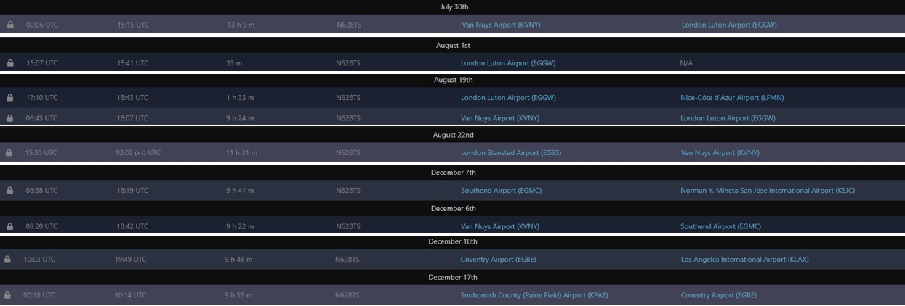

Information on Flights of Elon Musk's Jet (N628TS) to London and England in 2016"
Compilied by Jack Sweeney/ElonJet
Data is from OpenSky Network, ADSBExchange didn't log data back in 2016. To access OpenSky data older than a month you must be a feeder. As I feed data to OpenSky I am able to access this.

Please Credit Jack Sweeney/ElonJet & OpenSky Network